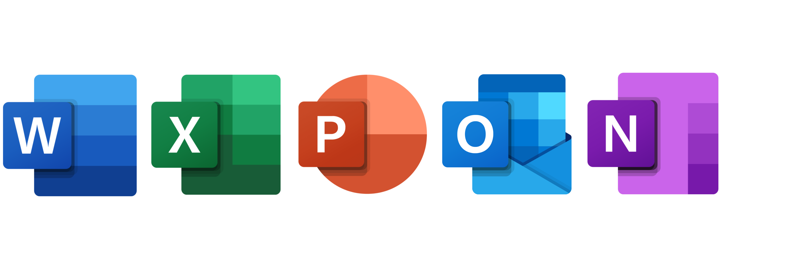
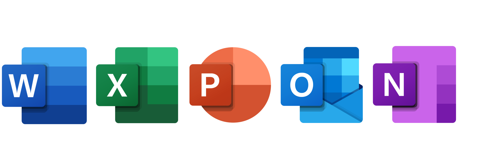

As a highly proficient user of Microsoft tools such as Excel, Word, PowerPoint, and others, I possess a strong foundation in technology and a deep understanding of its functionalities. I excel in collaborating with teams, contributing ideas, and building positive relationships to achieve common goals.
I have a strong mindset for solving problems, so I can look at complicated situations, come up with creative solutions, and make good decisions. I use my knowledge of Microsoft applications and the advanced features of Excel to manipulate and analyze data so that decisions can be made based on the data. I make visually appealing reports and presentations in Word and PowerPoint that show how to solve problems and make suggestions.
Being able to change is a key strength. I learn new technologies and software updates quickly, embracing change and staying ahead of the curve in my field. I eagerly try out the new features and apps that Microsoft releases, looking for creative ways to use them in my work and improve results. When I'm in a leadership role, I give them tasks based on their strengths and give them advice. Microsoft tools help the team communicate and work together well, ensuring everyone is on the same page and has the same goals.
I'm very good at managing time, prioritizing tasks, and meeting deadlines using Excel and Outlook. Features like conditional formatting and formulas that run on their make work easier and more efficient. Building strong relationships and figuring out how things work at work requires a lot of emotional intelligence. I can control and understand others' feelings, which makes for a good work environment. Microsoft tools make communicating and working together easier, making interactions go more smoothly.
Creativity is a big part of how I solve problems. I use Microsoft tools to help me think outside the box and develop new ways to solve problems. Whether I'm making charts and graphics that look good in Excel, making dynamic presentations in PowerPoint, or formatting documents in Word, my creative side adds value to every project.
 
